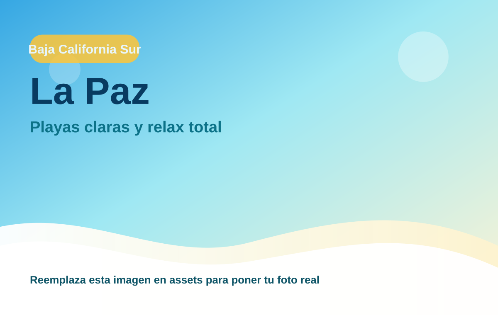
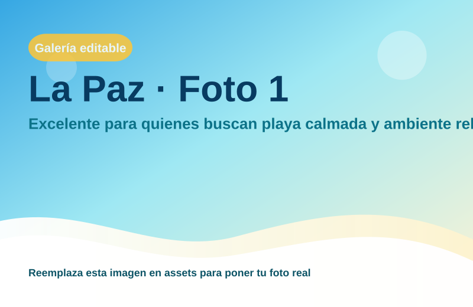
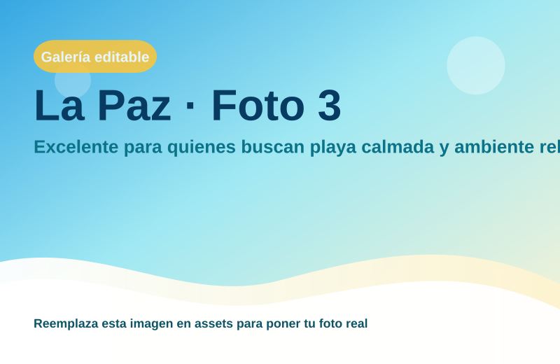
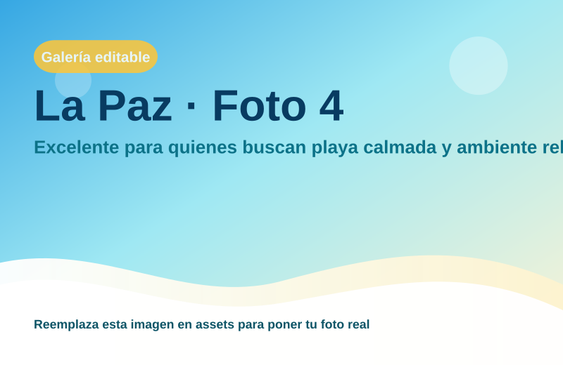

La Paz
Excelente para quienes buscan playa calmada y ambiente relajado.

Escapada tranquila y paisajes increíbles
Región: Baja California Sur
Ideal para: Playas claras y relax total
Usa esta ficha como base rápida. Puedes imprimirla en PDF desde el navegador o compartir el enlace.


